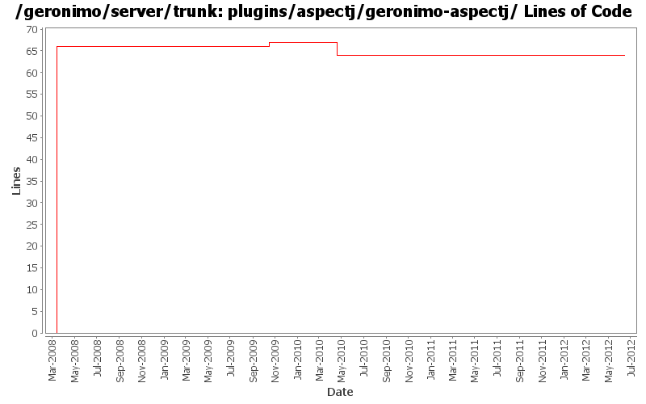

[root]/plugins/aspectj/geronimo-aspectj
 src
(0 files, 0 lines)
src
(0 files, 0 lines)
 main
(0 files, 0 lines)
main
(0 files, 0 lines)
 java
(0 files, 0 lines)
java
(0 files, 0 lines)
 org
(0 files, 0 lines)
org
(0 files, 0 lines)
 apache
(0 files, 0 lines)
apache
(0 files, 0 lines)
 geronimo
(0 files, 0 lines)
geronimo
(0 files, 0 lines)
 aspectj
(1 files, 71 lines)
aspectj
(1 files, 71 lines)

| Author | Changes | Lines of Code | Lines per Change |
|---|---|---|---|
| Totals | 14 (100.0%) | 144 (100.0%) | 10.2 |
| rickmcguire | 3 (21.4%) | 70 (48.6%) | 23.3 |
| gdamour | 3 (21.4%) | 66 (45.8%) | 22.0 |
| djencks | 5 (35.7%) | 7 (4.9%) | 1.4 |
| xiaming | 1 (7.1%) | 1 (0.7%) | 1.0 |
| jdillon | 2 (14.3%) | 0 (0.0%) | 0.0 |
Update trunk version to 4.0.0-SNAPSHOT
1 lines of code changed in 1 file:
[maven-release-plugin] prepare release 3.0-M2
1 lines of code changed in 1 file:
[maven-release-plugin] prepare branch 3.0-M2
64 lines of code changed in 1 file:
GERONIMO-5290 fix many of the deprecation warnings from maven 3
3 lines of code changed in 1 file:
GERONIMO-4680 get class transformers working somewhat in karaf. Make karaf script start geronimo
1 lines of code changed in 1 file:
clean up the clustering plugin build
5 lines of code changed in 1 file:
add bundle packaging to many modules
1 lines of code changed in 1 file:
GERONIMO-4655 upgrade version to 3.0-SNAPSHOT, make a few things more consistent
1 lines of code changed in 1 file:
GERONIMO-4258 move geronimo-j2ee into plugins/j2ee
1 lines of code changed in 1 file:
Drop *most* per-module legal muck, a few modules have additions to the standard... so left them in place for resolution later
0 lines of code changed in 2 files:
* Add two AspectJ related project and plugin:
- plugins/aspectj/geronimo-aspectj: define an AspectJLTWeaver GBean
installing a org.aspectj.weaver.loadtime.ClassPreProcessorAgentAdapter with
the TransformerCollection. Thanks to David J. who explained me how
ClassFileTransformers can be registered via GBeans; and
- plugins/aspectj/aspectj: define a configuration importing the necessary
AspectJ dependencies and register the above LTW service.
This allows application developers to easily achieve load-time-weaving of
AspectJ aspects through the definition of META-INF/aop.xml resources within
their configurations when they are children of the aspectj configuration.
Fixes GERONIMO-3922 - Addition of an AspectJ configuration enabling the
load-time-weaving of aspects defined by children configurations
* Upgrade to AspectJ 1.5.4 as suggested by Donald.
* Make wadi-clustering a child configuration of aspectj so that wadi-aop
aspects are lod-time-woven, if need be.
66 lines of code changed in 3 files: